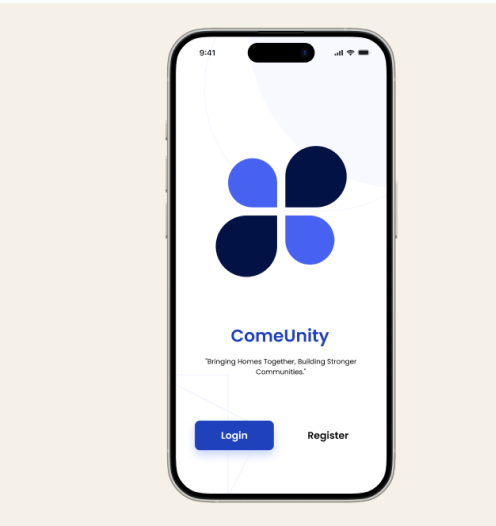
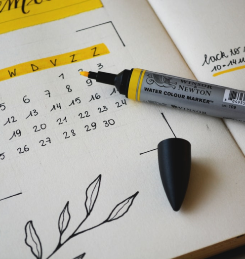

ComeUnity is a community-driven app designed to address societal
issues by collecting and uniting complaints from users, fostering
collaboration to find effective solutions. It empowers communities
to tackle common challenges together.
View Project


Digitising a Cooking Stove
"Digitising a Cooking Stove" involved integrating digital
features into a traditional cooking stove to enhance functionality,
efficiency, and user control.